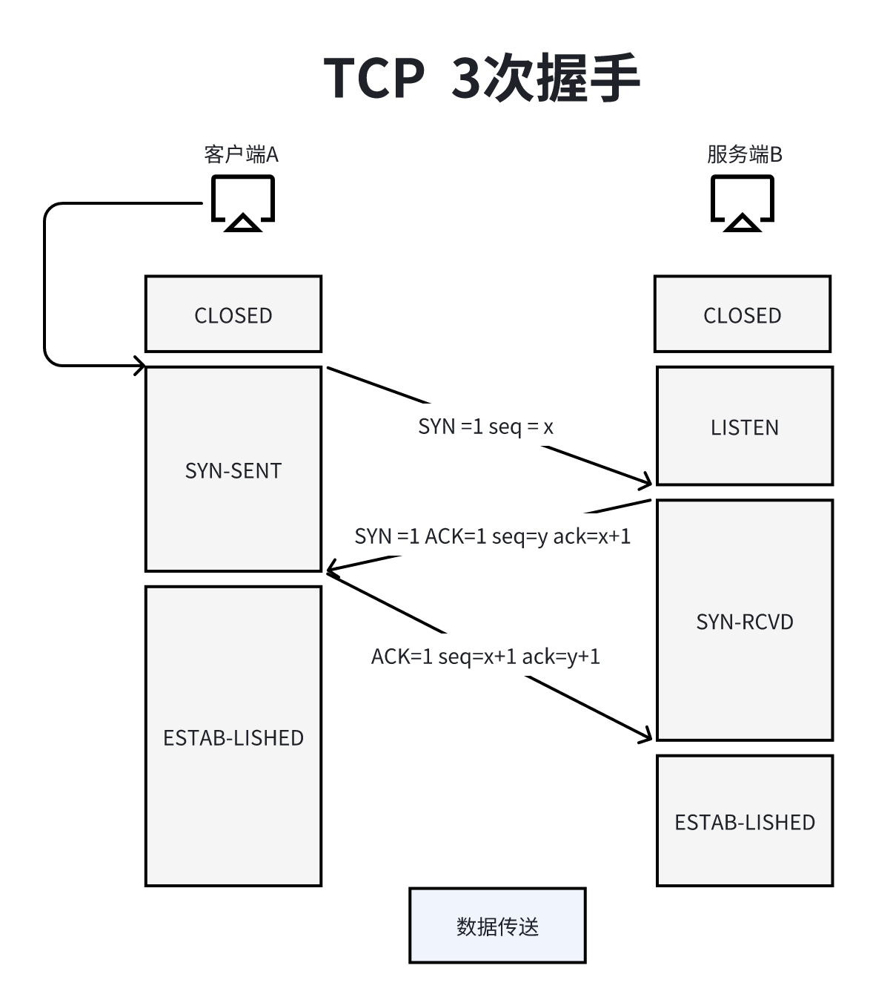

首先只有主机曾有传输层和上面的应用岑个，其他的网络设备（比如中继器、路由器）是没有传输层最多只能有数据链路层。
传输层是为应用层提供通信服务。同时使用网络层提供的服务。
主要功能：
1、传输层提供进程和进程之间的逻辑通信。
2、复用和分用。
3、对收到的报文进行差错检测。（首部校验和只是校验头部，并不对数据部分进行校验，数据检测交付给了高层，正是因为网络层校验了数据部分，所以网络层只需要检测头部）
分类：面向连接的传输控制协议TCP和无连接的用户数据包协议UDP。
TCP协议：传送数据之前必须建立连接，数据传送结束后要释放连接。不提供广播或多播服务。由于TCP要提供可靠的面向连接的传输服务，因此不可避免增加了许多开销：确认、流量控制、计时器以及连接管理等。
特点：可靠，面相连接，时延大，适用于大文件。
UDP协议：传送数据之前不需要建立连接，收到UDP报文后不需要给出任何确认。
特点：不可靠，无连接，时延小，适用于小文件。
端口：为实现传输层的复用，即应用层所有的应用进程都可以通过传输层在传输给网络层，以及分用，即传输层从网路层收到数据后交付指明的应用进程。我们存在了端口号这一概念。
端口，是传输层的SAP，标识主机中的应用进程，他是一种逻辑端口号，不同与硬件上的端口的概念。端口号只有本地意义，在因特网中不同计算机的相同端口是没有联系的。
另外，端口号长度为16bit，能表示65536个不同的端口号。
在网络中采用发送方和接收方的套接字组合来识别断电，套接字唯一标识了网络中的一个主机和它上面的一个进程。套接字 = IP地址 + 端口号。
端口分类：
1、服务使用端口号：
熟知端口号（0~1023）：端口号长度为16bit，能表示65536个不同的端口号。
登记端口号（1024~49151）。
2、客户端使用的端口号（49152~65535）：仅在客户进程运行时才动态选择。
FTP：21
TELNET：23
SMTP：25
DNS：53
TFTP：HTTP
HTTP：80
SNMP：161
UDP只在IP数据服务至上增加了很少功能，即复用分用和差错检测功能。
特点：
1、UDP是无连接的，减少开销和发送数据之前的时延。
2、UDP使用最大努力交付，即不保证可靠交付。
3、UDP是面向报文的，适合一次性传输少量数据的网络应用，也就是说应用层给UDP多长的报文，UDP就照样发送，一次性发送完整的报文。所以UDP协议必须传播大小合适的报文。
4、UDP没有拥塞控制，适合很多实时应用。（看直播可能很卡，因为它是UDP）。
5、UDP首部开销很小，8B，TCP是20B。
UDP长度：整个数据报的长度。
UDP校验和：检测整个UDP数据报是否有错，错就丢弃。
分用时，找不到对应的目的端口号，就丢弃报文，并给发送方发送ICMP“端口不可达” 差错报文。
伪首部：
伪首部里面的17是UDP的网络协议号。
伪首部只有在计算机校验和使才出现，不向不传送也不会向上递交。
UDP长度是UDP首部的8B加上数据部分的长度（不包括伪首部）。
如何利用伪首部校验数据报是否有差错：
发送端：
填上伪首部。
全0填充校验和字段。
全0填充数据部分（谁吧邠必须是四字节整数倍，不是，就用全0填充）。
伪首部 + 首部 + 数据部分采用二进制反码求和。
把和求反码填入到校验和字段。
去掉伪首部，发送数据报。
接收端：
填充上伪首部。
伪首部 + 首部 + 数据部分采用二进制反码求和。
结果为全1则无差错，否则丢弃数据报/交给应用层附上出差错警告。
协议特点：
TCP是一种面向连接（虚连接）的协议。
每一条TCP连接都只能有两个端点，也就是说每一条TCP连接必须是点对点的，因为无法应用广播多播。
TCP提供可靠交付的服务，无差错，不丢失、不重复、按序送达。保证可靠有序，不丢不重。
TCP提供全双工通信，因为接收方提供发送缓存和接收缓存。发送缓存包含的数据有准备发送的数据&已发送还未收到确认的数据，而接收缓存中包含有按序到达还为被接收应用程序读取的数据 & 不按序到达的数据。
TCP是面向字节流的，即TCP把应用程序脚下来的数据看成仅仅是一连串的无结构的字节流。
序号：在一个TCP连接中传送带额字节流中的每一个字节都按顺序编号，本字段表示本报文段所大宋数据得物第一个字节的序号。就是说吧这个文件每个字节都标好，第一次发送，序号是1，如果这次发送了n个自己，那么下次就是从n+1开始了，序号就是n+1。
确认号：期望收到对方下一个报文段的第一个数据字节的序号。如果确认号位N，则证明到序号N-1位置的所有数据都已正确收到。
数据偏移（首部长度）：TCP报文段的数据其实处理距离TCP报文段的起始处有多远，一4B位为单位，即1个数值是4B。首部不一定就是20字节，也可能加了一些选项和填充字段。
紧急位URG：URG=1时，标明此报文段中有紧急数据，最好优先级的数据，应尽快传送，不用在TCP发送缓存里排队，插队直接当第一个，配合紧急指针字段使用。
确认位ACK：ACK=1时确认号字段才有效，在连接建立后所有传送的报文段都必须把ACK设置为1。
推送位PSH：PSH = 1时，接收方尽快交付接收应用进程号，不在等到缓存填满在向上交付。TCP的接收方缓存要等到缓存区满了之后才向上交付给应用层的进程，如果报文段推送位1，那就直接交付，不用等。
复位RST：RST=1时，标明TCP连接出现严重差错，必须释放连接，然后再重新建立传输连接。也可以用来拒绝连接。
同步位SYN：SYN=1时，表明是一个连接请求/连接接受报文。
终止位FIN：FIN=1时，表明此报文段发送数据已发完，要求释放连接。
窗口：指的是发送报文段的一方的接收窗口，即现在允许对方发送的数据量，发送方接收端奥发送方的窗口字段后，也就知道如何设置自己的缓存大小。如果接收方确认号是701，而他的窗口是1000，那么发送方的缓存就应该存放701~1700。
校验和：校验首部+数据，校验时要加上12B伪首部，第四个字段就是TCP协议号位6。
紧急指针：URG=1时才有意义，指出本保温段中紧急数据的字节数。如果是50，则数据部分第1~50字节紧急数据。
选项：最大保温袋庀长度MSS、窗口扩大、时间戳、选择确认...MSS数是数据字段的最大长度。
TCP连接传输的三个阶段
TCP连接的建立采用客户服务器方式，主动发起连接建立的应用进程叫做客户，而被动等待连接建立的应用进程叫做服务器。虽然角色不同，但他们都可以收发数据。
假设运行在一台主机（客户）上的一个进程想要和另一台主机（服务器）上的一个进程建立一条连接，客户应用进程首先通知客户TCP，他项建立一个与服务器上某个进程之间的连接，客户中的TCP会用一下步骤与服务器的TCP建立一条TCP连接：

注意：ack是确认号，seq是序号。
第一次握手：客户端发送链接请求报文段，无应用层数据。SYN=1 seq=x（随机）。
第二次握手：服务器为该TCP连接分配缓存和变量，并型客户端返回确认报文段，允许链接，无应用层数据。SYN=1，ACK=1，seq=y（随机），ack=x+1。
第三次握手：客户端为该tCP连接分配缓存和变量，并项服务器段返回确认的确认，可以携带数据。SYN=0，ACK=1，seq=x+1，ack=y+1。
SYN洪泛攻击发生在OSI第四层，传输层，利用TCP协议特点，在第三次握手的时候，攻击者发送TCP SYN，SYN是TCP三次握手中的第一个数据报，当服务器返回ACK之后，攻击者就不再进行确认，而这个TCP连接就处于挂起状态，也就是所谓半连接状态，服务器收不到再确认的时候，还会重复发送ACK给攻击者。这样更加浪费服务器的资源。攻击者就对服务器发送非常大量的这种TCP连接，由于每一个都没法完成三次握手，所以在服务器上，这些TCP链接都会挂起，消耗CPU和内存，最后服务器宕机。
使用SYN cookie来解决次问题。
在TCP连接释放的时候四次回收过程。
参与一条TCP连接的两个进程中的任何一个都能被终止链接，连接结束周偶，主机中的资源会被释放。
第一次挥手：客户端发送连接释放报文段，停止发送数据，主动关闭TCP连接，FIN=1，seq=u（u表示之前已经传送数据最后一个字节的序号加1）。
第二次挥手：服务器端回送一个确认报文段，客户到服务器这个防线的连接就释放了-半关闭状态。ACK=1，seq=v，ack=u+1。（v表示之前已经连接数据最后一个字节的序号加1）
第三次挥手：服务器端发送完数据，就发出去链接释放报文段，主动关闭TCP连接。FIN=1，ACK=1，seq=w，ack=u+1。二三步的ack是一样的，因为途中客户端没有发送数据。（w取决于第二步之后服务器锁发送的数据量的多少）
第四次挥手：客户端回送一个确认报文字段，再等到时间等待计时器设置的2MSL（最长报文段寿命）后，连接彻底关闭，如果客户端不发生这个报文段，直接关闭连接，那么他自己就爽了，人家服务端没有收到确认还有一只读到第三次回收，这是一种不值得学的行为。
网络层仅提供最大努力交付的可靠传输。因为传输层可以通过TCP协议实现可靠传输。如果使用的UDP协议，那就只能指望更上层的应用层提供可靠传输了。
可靠传输指的是，保证接收方进程从缓存区独处字节流域发送方发出的字节流是完全一样的。
实现机制：
校验：和UDP一样，添加伪首部。
序号：指的是一个报文段第一个字节的序号。
确认：发送方发完报文段之后不会把报文从缓存中移除的，而是保存一段时间，在没收到确认之前就会重传报文段。收到确认之后才会把报文从缓存中删除。
重传：重复传输。
确认重传机制：
如果说发送方发送完123，再发送456，再发送78。在在发送456过程中数据丢失，接收方收到123返回确认号为4的确认，收到78后返回的确认号还是4的确认号。那么发送方就会重传456，接收方再次发送确认号就是9了，使用的就是SR 确认重传机制。
重传时间：对于重传时间，由于不同的报文段走的路线不一样，所以重传时间也是不一样的，TCP采用自适应算法，动态改变重传时间RTTs（加权平均往返时间）。发了第一个后，第一个RTT就是RTTs，发了第二个后，前两个平均是RTTs依次类推。
冗余ACK：冗余确认，每当期望序号大的失序报文段到达时，发送一个冗余ACK，指明下一个起到字节的序号。
假设发送方已经发送了1、2、3、4、5报文段：
接收方收到1，返回给1的确认（确认号2的第一个字节）。
接收方收到3，仍返回给1的确认（确认号为2的第一个字节）。
接收方收到4，仍返回给1的确认（确认号为2的第一个字节）。
接收方收到5，仍返回给1的确认（确认号为2的第一个字节）。
发送方收到2个对于报文段1的冗余ACK，于是便人气报文段2已丢失，重传报文段2号，这种就是快速重传。
流量控制就是让发送方慢点发，要让接收方来的及接受，避免严重的丢包现象。
滑动窗口机制：
TCP利用滑动窗口机制实现流量控制。
在通信过程中，接收方根据自己接收缓存的大小，动态的调整法发送方的发送窗口的大小，即接收窗口rwnd（接收方设置确认报文段的窗口字段来将rwnd通知给发送方）发送方的发送窗口取接收窗口rwnd和拥塞窗口cwnd的最小值。
窗口字段还能设置为0，就是让对方暂时不要发送。
有这样的情况，接收方给发送方的rwnd是0，过了一段时间有发送了rwnd为400B的报文，结果这个报文丢失了，这就造成了的情况就是发送窗口为0因为无法发送数据，而接收方却在等待发送方发送数据，双方都在等对方。
为了解决这种情况，TCP为每一个连接设置了一个持续计时器，只要TCP连接的一方收到对方的零窗口通知，就启动持续计时器。
如果持续计时器设置的时间到期，就发送一个零窗口探测报文段，接收方收到探测报文段就会给出现在的窗口字段值。
如果窗口仍然是0，那么发送方就重新设置持续计时器。
拥塞：当对资源需求的总和大于可用资源时，就会出现拥塞，也就是说多台主机都在发送信息，导致到款被占用完。
所谓的拥塞控制，起始就是从全局性层面上防止过多的数据注入到网络中。
拥塞控制和流量控制的区别：
拥塞控制是全局性的，是网络阻塞。
流量控制是点对点的，是接收方出现阻塞。
拥塞控制的四种算法：
慢开始
拥塞避免
快重传
快恢复
其中1 2配合使用 3 4配合使用。假设数据单方向柴松，另一个防线只传送确认。接收方总是有足够大的缓存空间，因为发送窗口大小取决于拥塞程度。
实际上发送窗口= min(接收窗口rwnd, 拥塞窗口cwnd)。接收方根据接收缓存设置的值，并告知给发送方，反映接收方容量。发送方根据自己估算的网络拥塞程度而设置窗口值，反应网络当前容量。
慢开始合拥塞避免
cwnd默认的初始值位1，也就是从1开始。注意，1不是一个字节，而是一个报文段长度MSS，其他数字也是。横轴代表的是传输轮次，一个传输轮次指的是发送了一批报文段并收到他们确认的时间，也及是一个往返时延RTT。而他也可以之开始发送一批拥塞窗口内的报文段内开始发送下一批拥塞窗口内的报文段的时间。
慢开始：从1开始，经过一个传输轮次，拥塞窗口变成了之前的两倍，ssthresh是满开石门县，到了ssthresh的初始值时，速度就会稍微减一点，从慢开始变成拥塞避免状态。
拥塞避免：每次只比上一次的拥塞窗口大小加1，（不是1字节而是1MSS），等出现网络拥塞时，cwnd又变成了默认初始值1MSS，并把新的ssthresh设置成出现网络拥塞时的拥塞窗口的大小除以2，然后重复以上步骤。
快重传和快恢复
快重传在TCP可靠传输提过，这里快恢复是除以2，发生在快重传时的拥塞窗口大小除以2。